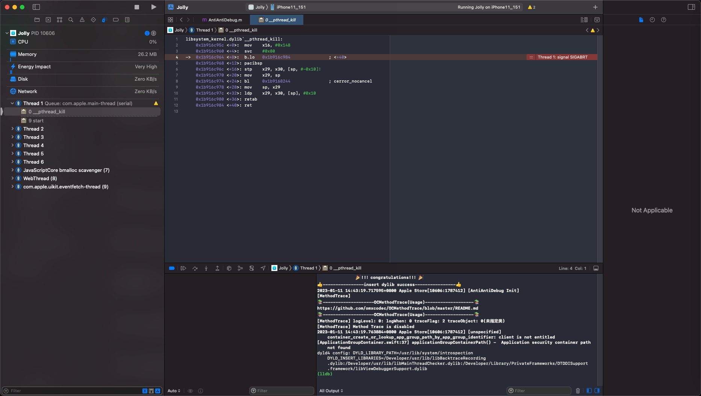

com.apple.security.application-groups
iOS的app：Apple Store，内置权限是：
<key>com.apple.security.application-groups</key>
<array>
<string>group.com.apple.store.Jolly</string>
</array>
如果（比如想MonkeyDev重新签名安装砸壳后的ipa后，其内部重签名过程会导致）去除了com.apple.security.application-groups的entitlement权限
则后续app运行会报container_create_or_lookup_app_group_path_by_app_group_identifier的错：
2023-01-11 14:43:19.763884+0800 Apple Store[10606:1787412] [unspecified] container_create_or_lookup_app_group_path_by_app_group_identifier: client is not entitled
[ApplicationGroupContainer.swift:37] applicationGroupContainerPath() - Application security container path not found

官网解释
- com.apple.security.application-groups
- Key
- com.apple.security.application-groups
- Type
- Array of strings
- Discussion
- App groups allow multiple apps produced by a single development team to access shared containers and communicate using interprocess communication (IPC). Apps may belong to one or more app groups.
- For iOS, format the identifier as follows:
group.<group name> - For macOS:
<team identifier>.<group name> - Apps within an app group share access to a group container. For more information about container creation, location, and deletion, see containerURLForSecurityApplicationGroupIdentifier:.
- Apps within a group can communicate with other members in the group using IPC mechanisms including Mach IPC, POSIX semaphores and shared memory, and UNIX domain sockets. In macOS, use app groups to enable IPC communication between two sandboxed apps, or between a sandboxed app and a non-sandboxed app.
- App groups also act as keychain access groups. For more information about the relationship between app groups and keychain access groups, see Sharing Access to Keychain Items Among a Collection of Apps.
- To add this entitlement to your app, enable the App Groups capability in Xcode, and add the groups your app belongs to.
- Key